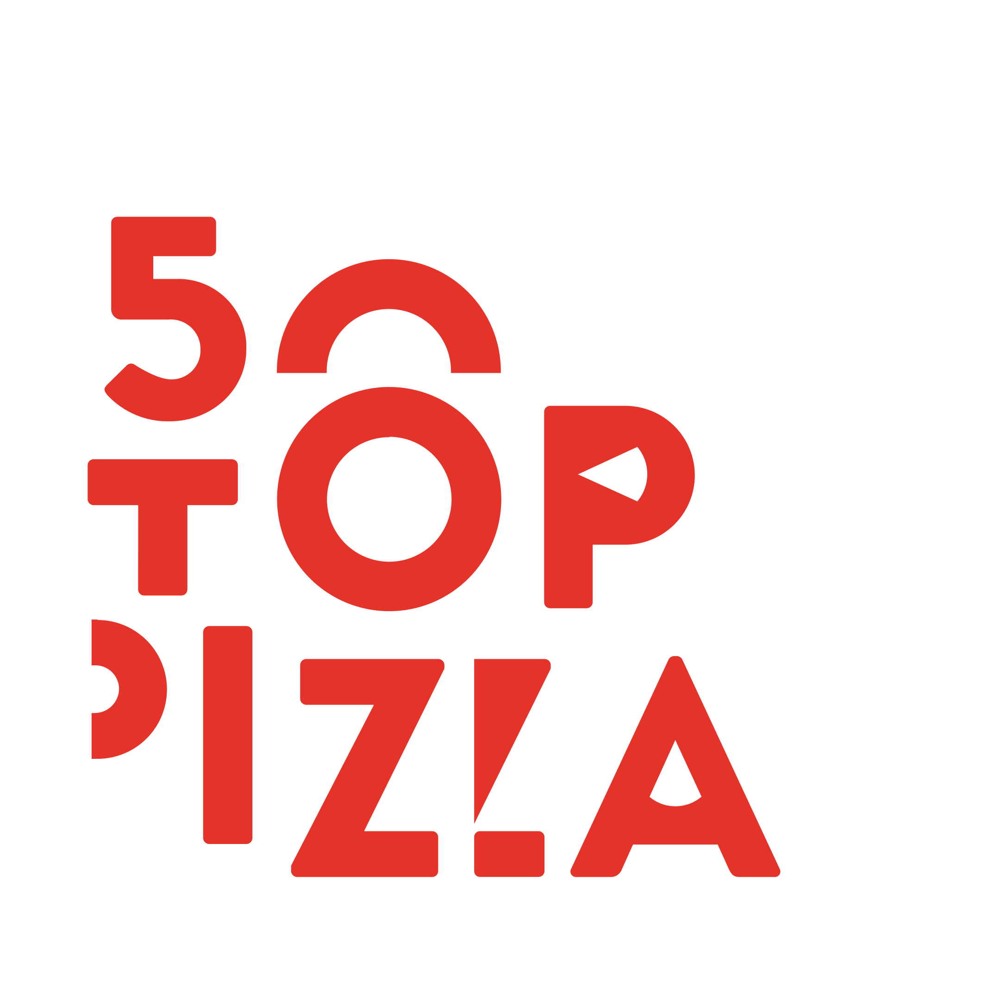
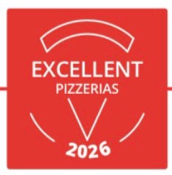

Guía Repsol 2026
Nuestra historia · Desde 2016
De Nápoles a Cazalla de la Sierra
Un pequeño rincón donde la tradición pizzera italiana se encuentra con el carácter de la Sierra Norte de Sevilla.


El pizzero detrás de Rústica
Eduardo Ramírez
2º Mejor Pizzero de España 2026 · Seleccionado entre los 7 mejores pizzeros de España 2026/27Eduardo se formó junto al maestro pizzaiolo Luca di Massa, que lo introdujo en la pizza napolitana contemporánea: horno de leña, alta hidratación y una fermentación cuidada al detalle.
Desde entonces ha ido puliendo su propia masa, con un sello muy suyo — un punto de granos de harina tostados — perfeccionado también con la ayuda del panadero Federico Jiménez, Miga de Oro de Andalucía 2019.
Más que una pizzería, somos un rincón donde se disfruta el sabor, el momento y la compañía. En Rústica Napoletana, cada pizza cuenta una historia — y todas empiezan con el mismo ingrediente: pasión.
Trabajo reconocido
Premios con nombre propio.
Cada reconocimiento resume horas de fermentación, pruebas frente al horno y una manera personal de unir Italia con la Sierra.




Tres años consecutivos entre las 50 mejores pizzerías de Europa, Guía Repsol 2026 y trofeos de Sevilla Gourmet.
Premios obtenidos
2º Mejor Pizzero de España 2026
Top 7 Pizzeros de España 2026/27
2× Mejor Pizza Sin Gluten
Participante La Mejor Pizza
El oficio, por dentro
Un vistazo por dentro.
El horno, los campeonatos y el equipo que hacen posible cada servicio.


Nuestra forma de hacerlo
Lo que nos hace diferentes.
Producto italiano
Tomate San Marzano, mozzarella fior di latte, burrata y embutidos importados.
Fermentación larga
48–72 horas de reposo para una masa más digestiva y sabrosa.
Horno de leña
Cocción tradicional a alta temperatura, en segundos.
Trato cercano
Un ambiente rústico y familiar en pleno casco de Cazalla.
Ven a conocernos
La próxima historia empieza en tu mesa.
Te esperamos de jueves a lunes, de 20:00 a 00:00.